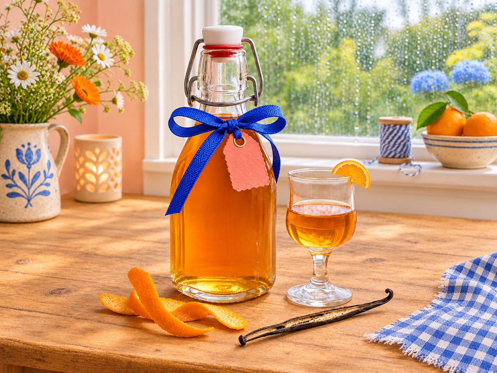

Krydderurtesalt
Lav krydderurtesalt med urter fra haven eller altanen. Fyld det på et lille genbrugsglas, og sæt et kort på med forslag til, hvad saltet passer til.
Læs guiden
Lav krydderurtesalt med urter fra haven eller altanen. Fyld det på et lille genbrugsglas, og sæt et kort på med forslag til, hvad saltet passer til.
Læs guiden
Lav en appelsinlikør med appelsinskal, vanilje og vodka fra barskabet. Hæld den på en genbrugsflaske, og bind et bånd om halsen.
Læs guiden
Fold små frøkuverter af brugt papir, og fyld dem med frø fra dine yndlingsblomster. Skriv blomstens navn og et lille såtip på hver kuvert.
Læs guidenHjælp mig med at vælge, hvilke gaveidéer jeg skal fremhæve. Som tak får du opskriften på appelsinlikør.
Anonymt spørgeskema · ca. 2 minutter